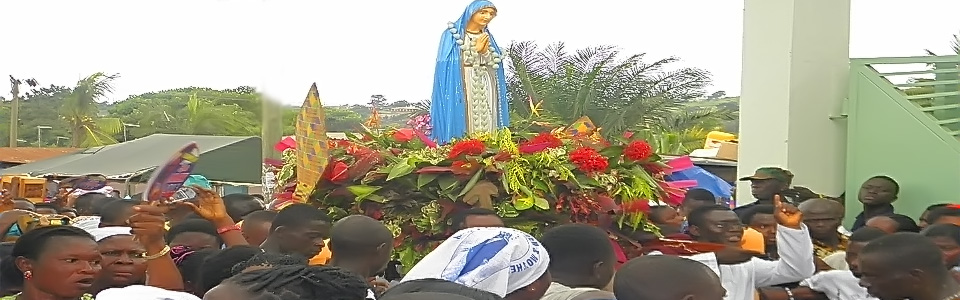
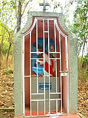

Choir & liturgy
Sacred music and altar service that lift our worship with reverence and joy.
A place of prayer and pilgrimage in the Catholic Diocese of Konongo-Mampong, Ashanti Region, Ghana.
We welcome pilgrims, families, youth, and visitors seeking Our Lady and the peace of Christ at the Grotto.
St. Mary's Sanctuary, Grotto-Buoho is one of Ghana’s major Catholic pilgrimage sites, in the Afigya-Kwabre District of the Ashanti Region. Founded in 1949, it remains a place of Mass, Marian devotion, vigils, and retreats.
Guided by Mary’s intercession, we proclaim the Gospel, celebrate the Sacraments, and welcome all who come to pray in the Diocese of Konongo-Mampong.


Come celebrate the Eucharist at St. Mary's Sanctuary, Grotto-Buoho.
Ministry that forms disciples and serves pilgrims with love.
Sacred music and altar service that lift our worship with reverence and joy.
Faith formation, fellowship, and outreach for the next generation of the Church.
Share a photo and birth month & day — our media team designs your flyer and publishes it here.